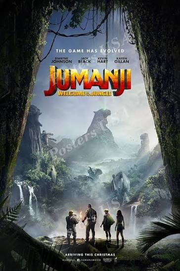

Dr. Smolder Bravestone
Interpretado por Dwayne Johnson
Es el avatar elegido por Spencer. Posee gran fuerza, velocidad y habilidades de combate. Aunque su apariencia es valiente, Spencer debe aprender a confiar en sí mismo para superar sus temores.

AVENTURAS · ACCIÓN · FANTASÍA
Cuatro estudiantes descubren un antiguo videojuego llamado Jumanji. Al comenzar a jugar, son transportados a una peligrosa selva y se convierten en los personajes que seleccionaron. Para regresar al mundo real, deberán trabajar en equipo y completar una difícil misión.
Jumanji: Welcome to the Jungle
2017
Jake Kasdan
Chris McKenna, Erik Sommers, Scott Rosenberg y Jeff Pinkner
Estados Unidos
119 minutos
Aventuras, acción, fantasía y comedia
Columbia Pictures
Dwayne Johnson, Kevin Hart, Jack Black, Karen Gillan y Nick Jonas
Henry Jackman
La historia comienza cuando cuatro estudiantes de preparatoria: Spencer, Fridge, Bethany y Martha, reciben un castigo escolar que consiste en ordenar un almacén de su escuela. Mientras realizan la actividad, descubren una antigua consola de videojuegos que contiene un juego llamado Jumanji.
Los jóvenes deciden encender la consola y seleccionar un personaje para jugar. Sin embargo, algo extraordinario sucede: son absorbidos por el videojuego y aparecen en una selva desconocida.
Cada estudiante adquiere el cuerpo y las habilidades del personaje que eligió. Spencer se convierte en el aventurero Dr. Smolder Bravestone; Fridge aparece como el zoólogo Franklin Finbar; Bethany se transforma en el profesor Sheldon Oberon; y Martha se convierte en Ruby Roundhouse, una experta en combate.
Pronto descubren que deben completar una misión para escapar del videojuego. Su objetivo consiste en recuperar una joya sagrada conocida como el Ojo del Jaguar y devolverla a una estatua para restaurar el equilibrio de Jumanji.
Durante su recorrido, los protagonistas enfrentan animales salvajes, trampas, enemigos y numerosos obstáculos. También descubren que cada personaje tiene fortalezas, debilidades y un número limitado de vidas.
En medio de la aventura, conocen a Alex, un joven que lleva muchos años atrapado dentro del videojuego. Juntos deciden completar la misión y encontrar una manera de regresar a sus hogares.
A medida que avanzan, los estudiantes aprenden a confiar unos en otros, superar sus inseguridades y aprovechar sus habilidades. Finalmente, consiguen devolver la joya a su lugar, completar el juego y regresar al mundo real.
La experiencia transforma la forma en que se relacionan. Los protagonistas comprenden la importancia de la amistad, la valentía, la confianza y el trabajo en equipo.
Interpretado por Dwayne Johnson
Es el avatar elegido por Spencer. Posee gran fuerza, velocidad y habilidades de combate. Aunque su apariencia es valiente, Spencer debe aprender a confiar en sí mismo para superar sus temores.
Interpretado por Kevin Hart
Es el personaje elegido por Fridge. Tiene conocimientos sobre animales y funciona como ayudante de Bravestone. Su aventura le enseña a colaborar y valorar las capacidades de los demás.
Interpretado por Jack Black
Es el avatar de Bethany. Posee conocimientos sobre mapas y exploración. La experiencia dentro del videojuego le permite desarrollar empatía y comprender mejor a sus compañeros.
Interpretada por Karen Gillan
Es el personaje elegido por Martha. Tiene habilidades de combate y una gran capacidad física. Durante la aventura, Martha aprende a confiar en sus habilidades y a superar su inseguridad.
Interpretado por Nick Jonas
Es el avatar de Alex, un joven que quedó atrapado en Jumanji muchos años antes. Ayuda al grupo a comprender los peligros del juego y completar la misión.
Interpretado por Bobby Cannavale
Es el principal antagonista del videojuego. Busca conservar la joya del Jaguar y utiliza sus poderes para impedir que los protagonistas completen su misión.
La historia se desarrolla en un mundo desconocido, lleno de animales, montañas, ríos, trampas y peligros.
Los protagonistas deben recuperar una joya sagrada y devolverla a su lugar para completar la misión y escapar del videojuego.
Cada personaje posee habilidades, debilidades y vidas limitadas. Estas reglas aumentan el peligro y obligan al equipo a tomar decisiones.
Jumanji: En la selva pertenece al subgénero de aventuras porque presenta un viaje hacia un mundo desconocido, donde los protagonistas deben superar desafíos y completar una misión para regresar a su realidad. La historia combina exploración, acción, peligro, humor y fantasía. Además, los personajes experimentan cambios personales a medida que enfrentan las dificultades del videojuego.
Dejamos atrás la selva de Jumanji para conocer a un gato extraordinariamente inteligente que utiliza su astucia para cambiar la vida de su dueño.